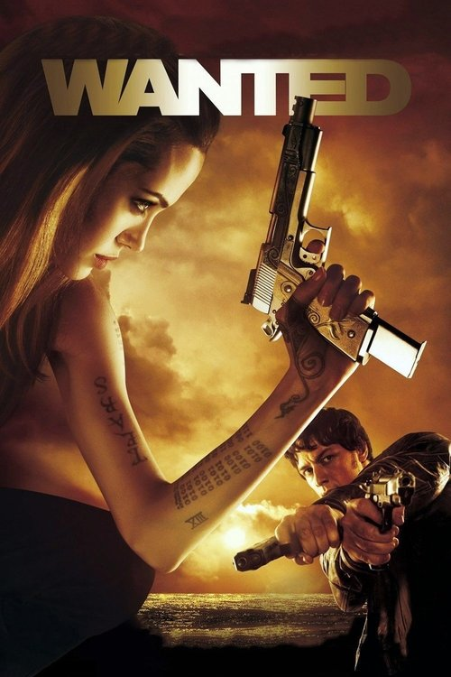

Wanted (2008)
الوصف: Doormat Wesley Gibson is an office worker whose life is going nowhere. He meets an attractive woman named Fox and discovers that his recently murdered father - whom Wesley never knew - belonged to the Fraternity, a secret society of assassins which takes its orders from Fate itself. Fox and Sloan, the Fraternity's leader, teach Wesley, through intense training, to tap into dormant powers and hone his innate killing skills. Though he enjoys his newfound abilities, he begins to suspect that there is more to the Fraternity than meets the eye.
الممثلون
- James McAvoy (Wesley Gibson)
- Angelina Jolie (Fox)
- Morgan Freeman (Sloan)
- Terence Stamp (Pekwarsky)
- Thomas Kretschmann (Cross)
- Common (The Gunsmith)
- Kristen Hager (Cathy)
- Marc Warren (The Repairman)
- David O'Hara (Mr. X)
- Dato Bakhtadze (The Butcher)
المخرج: Timur Bekmambetov
المنتج: Jim Lemley